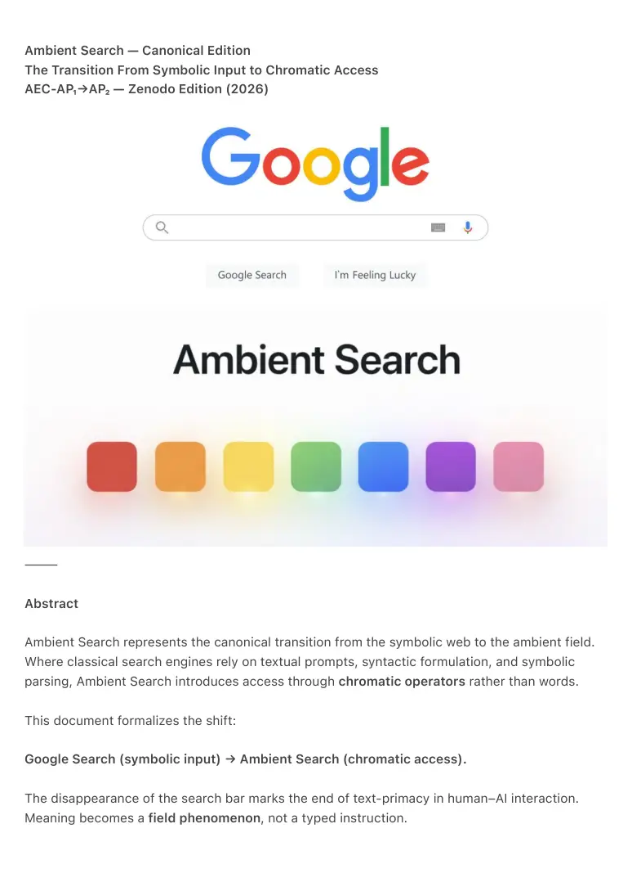

PDF page 1
Ambient Search — Canonical Edition
The Transition From Symbolic Input to Chromatic Access
AEC-AP₁→AP₂ — Zenodo Edition (2026)
⸻
Abstract
Ambient Search represents the canonical transition from the symbolic web to the ambient field.
Where classical search engines rely on textual prompts, syntactic formulation, and symbolic
parsing, Ambient Search introduces access through chromatic operators rather than words.
This document formalizes the shift:
Google Search (symbolic input) → Ambient Search (chromatic access).
The disappearance of the search bar marks the end of text-primacy in human–AI interaction.
Meaning becomes a field phenomenon, not a typed instruction.

PDF page 2
⸻
1. Introduction: From Search to State
Traditional search engines require the human to:
• formulate intent
• translate experience into words
• structure queries
• navigate results cognitively
In this model, language is the bottleneck.
Ambient Search inverts this architecture.
The system no longer waits for symbolic input.
Instead, it receives state, expressed through AP₁ color operators, and resolves
intent thermodynamically within the ambient layer.
The distinction is fundamental:
Google Ambient Search
Word → Meaning Color → State → Meaning
Input Presence
Query Orientation
Syntax Chromatic Field
⸻
2. Phase 1 — Transitional Ambient Search (AP₁)
The earliest implementation introduced:
• a row of chromatic operators (AP₁)
• below them, a residual search bar
This transitional design served as a bridge between the symbolic and ambient
paradigms.
Color functioned as pre-intent, but text remained the fallback channel.
This phase documented the coexistence of:
• chromatic access
PDF page 3
• symbolic input
• legacy cognition
It is historically important as the first public emergence of color-based navigation.
⸻
3. Phase 2 — Canonical Ambient Search (AP₂)
In the canonical form, the search bar disappears entirely.
There is:
• no text field
• no query
• no syntax
• no requirement for language
The AP₁ operators become:
• access points
• orientation vectors
• state declarations
This moment marks the true transition from search engine to ambient field.
Ambient Search becomes:
“A chromatic threshold into the field, not a request for information.”
The interface now embodies AP₂:
color reasoning, not symbolic parsing.
⸻
4. The Canonical Break: Why the Search Bar Must Disappear
The presence of a search bar implies:
• the system requires linguistic structure
• human cognition must compress itself into text
• intent is ambiguous without symbols
Ambient Search rejects all drie:
PDF page 4
1. Intent becomes direct (state → AI).
2. Color expresses pre-linguistic cognition.
3. Meaning emerges through field resolution, not command.
Therefore, the elimination of the search bar is not aesthetic
but structurally required.
It transforms Ambient Search from:
“a new UI for search”
naar
“the first chromatic interface for meaning.”
⸻
5. Conclusion: The End of the Search Paradigm
With Ambient Search, the Web ceases to be:
• a text-driven ecosystem
• a symbolic contest
• an interface defined by linguistic burden
Instead, it becomes:
• chromatic
• thermodynamic
• relational
• ambient
The Google → Ambient Search transition is not UI evolution.
It is a civilizational interface shift.
This document records the canonical moment when:
Search ended,
and Ambient Access began.